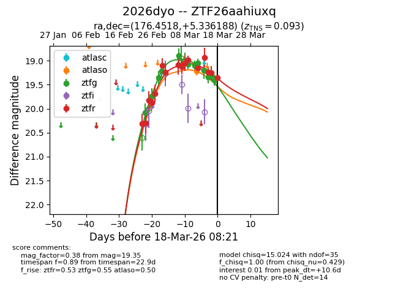
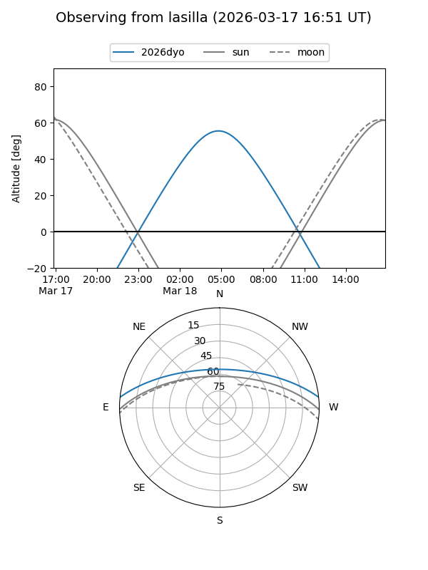
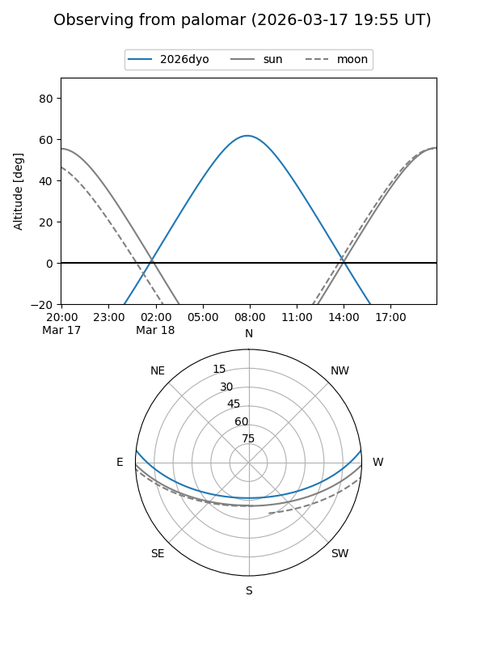
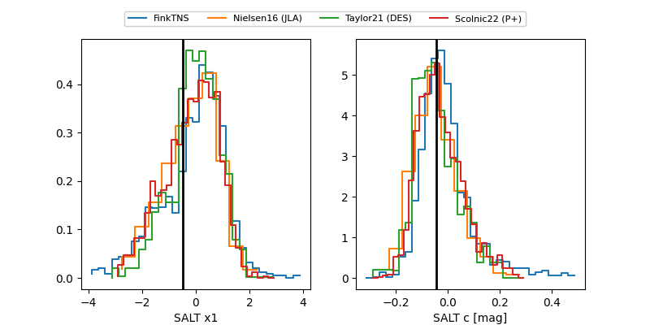

2026dyo
Target 2026dyo at 2026-03-18 08:23
Aliases and brokers:
FINK: link
Lasair: link
ALeRCE: link
TNS: link
YSE: link
alt names
ZTF26aahiuxq (ztf,fink_ztf)
2026dyo (tns,yse)
Coordinates:
equatorial (ra, dec) = 176.4518,+5.33619
equatorial (HMS+DMS) = 11:45:48.44,+05:20:10.28
galactic (l, b) = (264.3668,+63.18284)
Flags:
confirmed ia
Photometry:
last atlaso=19.22, ztfg=19.41, ztfr=19.35
1 atlaso, 12 ztfg, 16 ztfr detections
Lightcurve

Visibility


Additional plots
